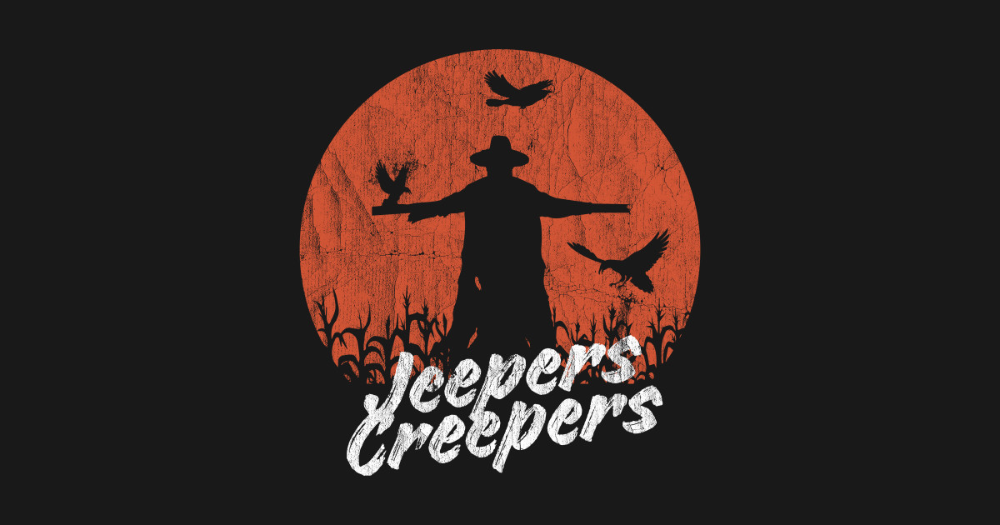

Homicide Intervention Team
-
HIT: The First Case
Vikram, a cop with PTSD, investigates the disappearance of a young woman, uncovering a web of abduction and betrayal that leads to a shocking mastermind within his own circle.
-
HIT: The Second Case
A sharp cop takes on a chilling murder case, unraveling dark secrets in a coastal town. The investigation tests his instincts and courage as he races to catch a cunning killer.
-
HIT: The Third Case
Arjun Sarkaar, a tough and obsessive officer, goes undercover to infiltrate a dark web cult involved in serial killings and organ trafficking, ultimately exposing the network and confronting the true mastermind.
Jurassic Park
-
Jurassic Park
An industrialist invites some experts to visit his theme park of cloned dinosaurs. After a power failure, the creatures run loose, putting everyone's lives, including his grandchildren's, in danger.
-
The Lost World: Jurassic Park
A research team is sent to the Jurassic Park Site B island to study the dinosaurs there, while an InGen team approaches with another agenda.
-
Jurassic Park III
A decidedly odd couple with ulterior motives convince Dr. Grant to go to Isla Sorna for a holiday, but their unexpected landing startles the island's new inhabitants.
-
Jurassic World
A new theme park, built on the original site of Jurassic Park, creates a genetically modified hybrid dinosaur, the Indominus Rex, which escapes containment and goes on a killing spree.
-
Jurassic World: Fallen Kingdom
When the island's dormant volcano begins roaring to life, Owen and Claire mount a campaign to rescue the remaining dinosaurs from this extinction-level event.
-
Jurassic World: Dominion
Four years after the destruction of Isla Nublar, Biosyn operatives attempt to track down Maisie Lockwood, while Dr Ellie Sattler investigates a genetically engineered swarm of giant insects.
-
Jurassic World Rebirth
An expedition braves isolated equatorial regions to extract DNA from three massive prehistoric creatures for a groundbreaking medical breakthrough.
Jeepers Creeper

-
Jeepers Creepers
A brother and sister driving home through isolated countryside for spring break encounter a flesh-eating creature which is in the midst of its ritualistic eating spree.
-
Jeepers Creepers III
Sheriff Dan Tashtego and a team of creeper hunters enlist the help of officer Davis Tubbs to help stop the monster's eating spree.
-
Jeepers Creepers 2
Set a few days after the original, a championship basketball team's bus is attacked by The Creeper, the winged, flesh-eating terror, on the last day of his 23-day feeding frenzy.
-
Jeepers Creepers: Reborn
Forced to travel with her boyfriend, Laine begins to experience premonitions associated with the urban myth of The Creeper. She believes that something supernatural has been summoned - and that she is at the center of it all.